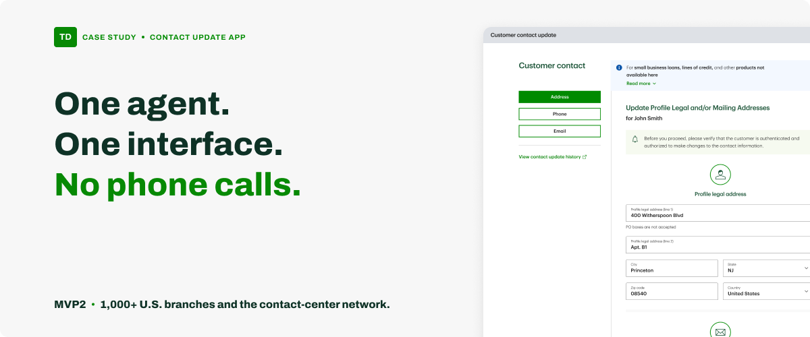
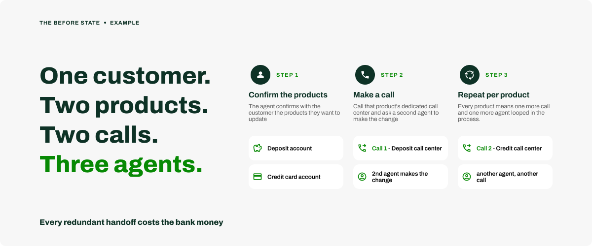
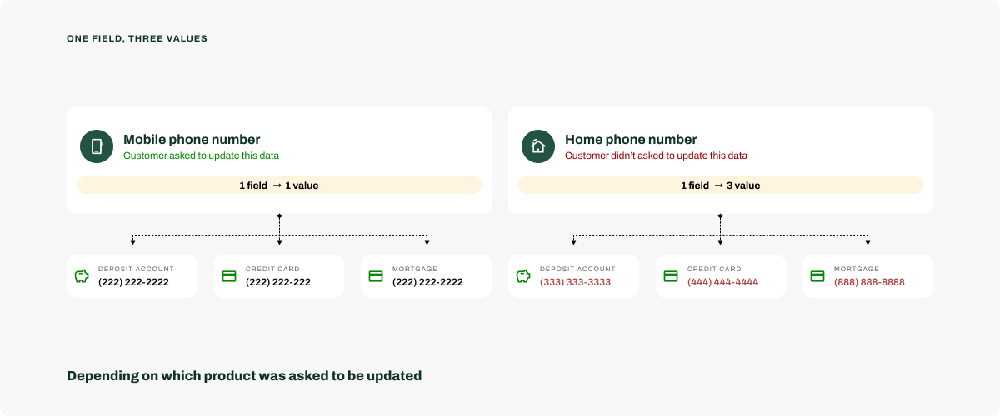
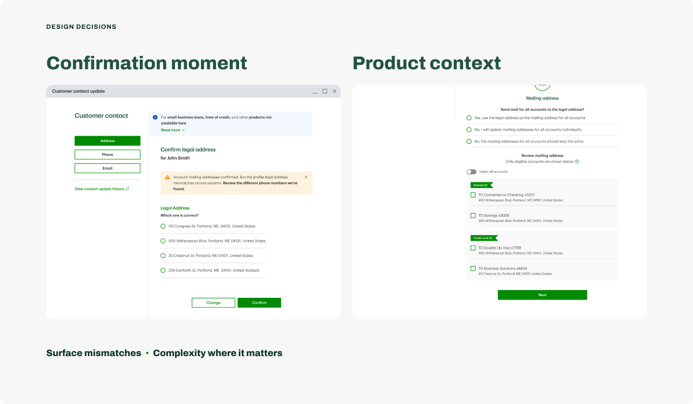
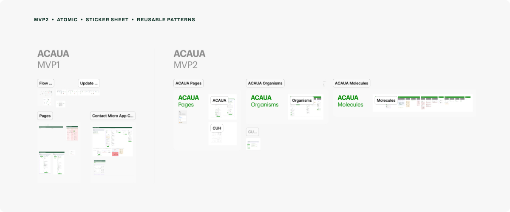
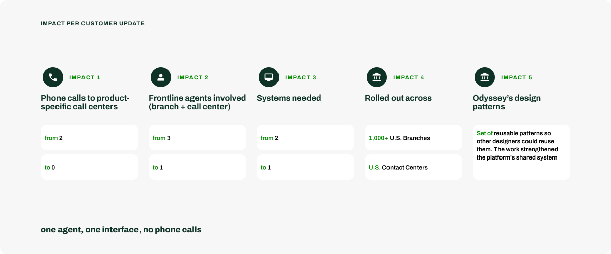
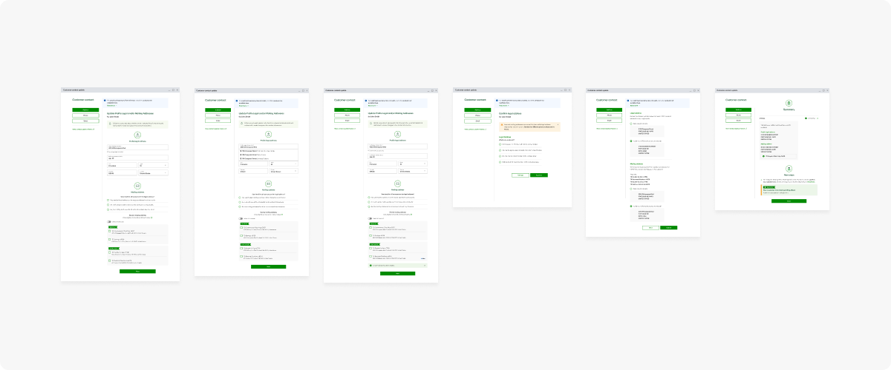
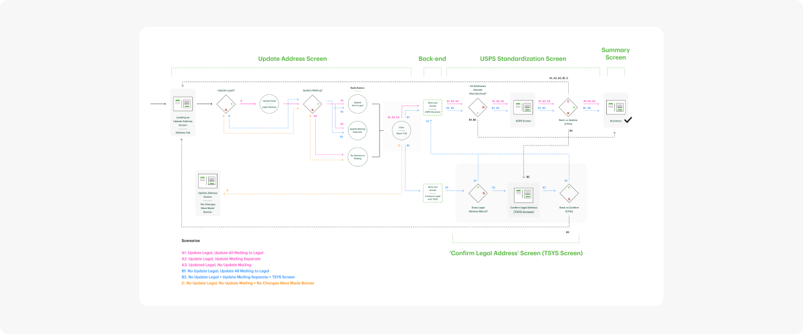
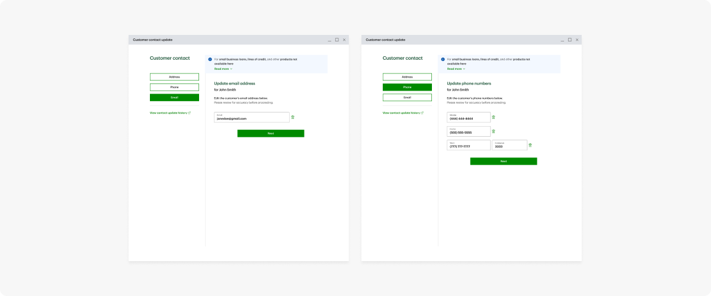

TD Bank
Customer contact
update app
TD's first contact-update experience built around the customer instead of the product — live across 1,000+ U.S. branches and the contact-center network.

context
contact info lived with the product, not the customer
Updating a customer's contact information is one of the most frequent tasks TD Bank's agents perform everyday. But contact information at TD was stored per product, not per customer. Each product — deposit account, credit card, mortgage… — kept its own record, in its own legacy system, managed by its own product-specific call center.
So the agent sitting with the customer couldn't make the change themselves, instead they needed to call another agent to make the change. If a customer wanted the same phone number on both a debit account and a credit card needed two separate calls.

the problem
simple on the surface, structural underneath
The pain showed up on two levels:
On the surface — what should be a quick, minutes-long task was a multi-call process. Every handoff was a chance for error, every call added wait time for the customer, and every redundant agent added operational cost.
The Contact Update App was built to flip that — from product-based to profile-based: one place, one agent, any product. MVP1 proved the concept for deposit accounts only.
MVP2 — my work — added the second product, credit cards.
Underneath — the bank wanted the customer's contact details to stay consistent across products, even when the customer didn't ask for it; there was rarely a good reason for those values to differ. But agents only changed what the customer raised, so whatever went unmentioned kept its conflicting value. Nothing ever surfaced the mismatch. This became the real challenge.
the challenge
catching conflicts before they become rework
- How do we let an agent resolve conflicting contact information across a customer's products — even when the customer didn't ask about it
- without adding friction to a task they perform dozens of times a day?
"the hard part wasn't the screen — it was keeping it effortless for the agent."

the approach
map the system before the screen
map the system — contact data lived in separate legacy systems we'd update rather than replace, so I audited the deposit journey and mapped those flows with the Tech Lead. Knowing where each value came from — and where an update would land — is what surfaced the need for the confirmation moment when conflicting data was found across systems.
design for reuse — I treated MVP2 as more than "add credit cards", my goal was to design patterns any product — mortgages, loans, investments — could reuse, and join the same journey without retraining agents or engineers rebuilding a new workflow. Also worked with the platform's design leadership so every pattern aligned with Odyssey's approved, reusable patterns — extending the shared system rather than adding a one-off.
build the evidence — with no researcher on the team, my evidence came from the weekly program calls: requirements straight from my Product Owner (a former store manager), the Tech Lead, the BSA, and branch and contact-center leads. The same forum let me pressure-test flow logic against operational reality and stay ahead of shifting requirements.
design decisions
1. When systems disagree, force a resolution — the confirmation moment.
I designed the confirmation moment for when two legacy systems held different values and the customer hadn't asked to update them. The pattern surfaces the mismatch right in the agent's flow and asks them to pick the correct one before saving. It groups the options by type (legal and mailing address, mobile/home/work phone) and pre-selects the value just entered — so the common path is a single "Confirm" click.
It costs a click and saves a phone call — and stops the customer from coming back later to fix a record no one touched.
2. Add complexity only where the data requires it.
The simpler build was one template for all three tabs — I differentiated instead, because the data genuinely differs. A mailing address can legitimately vary by product (a jointly-held account might send statements elsewhere), so it's product-aware and reusable.
Phone and email are personal to the customer, so they never need product context — and with a single email there's nothing to reconcile, so no confirmation at all. Complexity shows up only where a conflict is possible.

validation
pressure-tested by the people who run the operation
The weekly program calls had already let me pressure-test the designs. Once MVP2 was built, I walked it through structured reviews with branch managers and contact-center managers — the operational leaders who know the agent workflow better than any spec. Their sign-off confirmed three things:
- It met the business requirements — the flow did what the program set out to do.
- It fit how branches and contact centers actually operate — no clash with the real workflow.
- It held up against the situations agents hit day to day — the edge cases a requirements doc never lists.
In parallel, the design team and QE verified that the build preserved the design intent, screen by screen.
scale
a feature ships, a foundation compounds
The real output of MVP2 wasn't the credit-card screens — it was a set of reusable interaction patterns: the confirmation moment, and handling each contact type on its own terms.
These patterns were added to Odyssey's library of approved, reusable patterns (Odyssey is the platform this micro-app lives in), so other designers could reuse them. The work strengthened the platform's shared system rather than adding a one-off.

impact
one agent, one interface, no phone calls
Updating a customer's contact info used to fan out into a call per product and a second agent each time. MVP2 collapsed that into one interaction — and set the reusable pattern for every product still to come.

reflection
ownership is more than autonomy — I drove the decisions end-to-end — but ownership meant the legwork around them, too: pulling requirements and technical constraints straight from stakeholders in the weekly program calls, and partnering with the platform's design leadership to align my patterns with Odyssey's approved set. Owning the work wasn't doing it alone — it was taking responsibility for it while pulling in the right people.
scalability is a design decision — the reusable patterns I designed up front are what turned a feature into a foundation — the real win wasn't adding credit cards, it was making the next product almost free to add.


